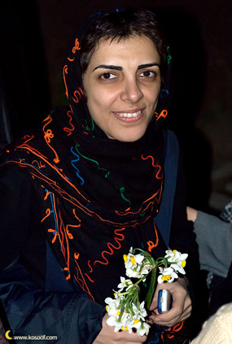

پذيرش > سایت نوشته ها > همگرایی؛ طرح مطالبات زنان یا فعالیتی سیاسی؟
 همگرایی جنبش زنان در گفت و گو با پروین اردلان از اولین اعضای کمپین یک میلیون امضا و محبوبه عباسقلیزاده، از امضا کنندگان بیانیه همگرایی همگرایی جنبش زنان در گفت و گو با پروین اردلان از اولین اعضای کمپین یک میلیون امضا و محبوبه عباسقلیزاده، از امضا کنندگان بیانیه همگرایی

 همگرایی؛ طرح مطالبات زنان یا فعالیتی سیاسی؟ همگرایی؛ طرح مطالبات زنان یا فعالیتی سیاسی؟
17 خرداد 1388 - راديو زمانه - نسخه قابل چاپ
در تاریخ هشتم اردیبهشتماه و در آستانه انتخابات ریاست جمهوری، بخشی از فعالان جنبش زنان که در عرصههای گوناگون صنفی و اجتماعی فعالیت دارند، با انتشار بیانیهای تحت عنوان «همگرایی جنبش زنان برای طرح مطالبات در انتخابات» ائتلافی را اعلام کردند که استقبال ۳۷ گروه و حدود ۷۰۰ فعال اجتماعی را به همراه داشت.
به رغم آن و به دلیل پویایی که جنبش زنان در سالهای اخیر به آن دست یافته است، در هفتههای گذشته تعدادی از فعالان جنبش زنان با طرح انتقادها و نظرهایی درباره این ائتلاف، بحثهایی را در میان فعالان اجتماعی و مدنی برانگیختند.
در اولین واکنشها پروین اردلان، روزنامهنگار و فعال جنبش زنان و از اولین اعضای کمپین یک میلیون امضا، در مطلبی تحت عنوان «به نام همگرایی، به جای کمپین» با اشاره به برخی مطالبی که فعالان همگرایی درمورد رابطه کمپین یک میلیون امضا با همگرایی جنبش زنان مطرح کرده اند، به نقد همگرایی پرداخت.
«مطالبات حداقلی و حداکثری»
پروین اردلان در گفت و گو با رادیو زمانه به سوالهایی در مورد انتقادهای خود از ائتلاف همگرایی پاسخ داد. خانم اردلان! انتقاد شما بیشتر متوجه کدام نظر و یا فعالیت همگرایی است؟
آنچه نقد مرا متوجه این قضیه کرده، این است که ما مسأله را تعمیم ندهیم، چون خیلی از اعضای همگرایی معتقد هستند همگرایی یک ائتلاف است که در یک مقطع زمانی شکل گرفته و برای هدفی پیش میرود و بعد هم تمام میشود و البته ممکن است از دل آن گروههای دیگری ایجاد شود.
اگر این ائتلاف بخواهد در این حد و برای طرح مطالبات زنان در انتخابات ریاست جمهوری شکل گیرد، ادامه دهد و بعد از انتخابات هم به کار خود پایان دهد، مشکلی نیست. ولی به نظر من اینکه بیاییم در فضای انتخاباتی و با سرعت، حرکتی را به یک حرکت دیگر سنجاق کنیم و بگوییم ادامه یکدیگر هستند، درست نیست.
خیلیها معتقد هستند هزینه کمپین بالا رفته، منفعل شده و دیگر نمیتواند فعالیتی انجام دهد، ولی من این مسأله را قبول ندارم. کمپین یک میلیون امضا سه سال پیش شکل گرفته و در این سه سال به صورت چهره به چهره و خیابانی برای ارتقای آگاهی حقوقی و ایجاد مطالبه فعالیت کرده است.
کمپین در این سه سال با همه افت و خیزها و با همه هزینهپردازیها موفق بوده است، چون میزان شناخت مردم از کمپین بسیار بیشتر شده و حداقل از هر چند نفر میتوانید یک نفر را پیدا کنید که کمپین را بشناسد و با بخشی از مطالبات آن آشنا باشد، آن هم دراین فقدان رسانهای.
در نتیجه کمپین یک حرکت دراز مدت است که به تدریج پیش میرود و ممکن است بعضی روزها افت کند و بعضی روزها بالا بیاید. قدرت این کمپین در رشد تدریجی حرکت افقی است و به عنوان مثال در فضای انتخاباتی شکل نگرفته که بخواهد ناگهان بالا و پایین برود. به نظر من کمپین آنقدر فعالانه عمل کرده که توانسته است طرح مطالبات محوری را در حوزه زنان به شدت بالا ببرد.
شما بیانیه همگرایی را امضا نکردید و میتوان گفت با این حرکت مخالف بودید. چرا؟
یکی از بحثهای مطرح شده در همگرایی این است که تا کنون مطالبات به صورت حداقلی مطرح شده و ما میخواهیم مطالبات حداکثری را مطرح کنیم و زنان را به حوزههای سیاسی وارد کنیم و این یک نوع بلوغ سیاسی در حوزه زنان است.
به نظر من کار سیاسی با رویکرد سیاسی داشتن متفاوت است. اگر ما درباره کمپین و مطالبات حداقلی صحبت میکنیم، باید بگویم این خواستهها آنقدر تأثیرگذار بوده که توانسته رویکرد سیاسی در جامعه ایجاد کند، بدون اینکه برای یک هدف سیاسی حرکت کرده باشد.
خانم اردلان! این رویکرد سیاسی را چگونه تعریف میکنید؟
وقتی با این همه محاکمه و بازداشت روبهرو میشویم، بحث مطالبات به مراجع قانونگذاری کشیده میشود و مقامهای مختلف را درگیر میکند و وقتی میتواند مجلس را تحت تأثیر قرار دهد، یعنی توانسته این مطالبهمحوری را به آن سطوح برساند و در عین اینکه فعالیت و خواست آن مدنی بوده، توانسته رویکرد سیاسی داشته باشد.
ما نیامدهایم کار سیاسی انجام دهیم که حالا بگوییم فعال سیاسی شدهایم. افرادی که بازداشت و زندانی شدهاند هیچ کدام نیامدهاند که فعالیت سیاسی انجام دهند، بلکه این نگاه حکومت است که از آن یک رویکرد سیاسی میسازد.
طرح این موضوع که اگر تا به حال برای حق طلاق یا چیزهای دیگر جنگیدهایم، خواستههایمان حداقلی و بیخاصیت بوده و اکنون در فضای انتخاباتی میخواهیم در قانون اساسی تغییر ایجاد شود و این خواسته حداکثری است و ما توانستهایم به بلوغ سیاسی برسیم، درست نیست و به نظر من این دو موضوع با هم متفاوت است.
علت مخالفت شما با همگرایی، بیشتر به این دلیل است که فعالان همگرایی وارد یک حرکت سیاسی شدهاند؟
من وارد همگرایی نشدم، چون فکر میکردم که مطالبات زنان در این چند سال خیلی خوب و به صورت عینی در جنبش زنان مطرح شده است و فقط به مطالباتی که در کمپین مطرح شده، محدود نمیشود. هر چند کمپین کار بزرگی انجام داد که مطالبه محوری را در حوزه زنان شدت بخشید و به جنبشهای دیگر نیز تسری داد و اگر نقش تعیین کننده در این موضوع نداشت حداقل نقش تأثیرگذار داشت.
ولی ریاست جمهوری یک آزمون است، یعنی عدهای از چندین فیلتر غیردموکراتیک مانند شورای نگهبان میگذرند و کاندیدا انتخابات میشوند و بعد ما میخواهیم از این افراد مطالبهمحوری کنیم، در حالی که جنس این کار با فعالیت ما درکمپین متفاوت است.
من میتوانم به عنوان یک کمپینی بروم به یک کاندیدای ریاست جمهوری بگویم که این بیانیه ما است. شما آن را امضا میکنی یا نه؟ کدامیک از این مطالبات را قبول داری؟ چرا امضا میکنی و یا چرا امضا نمیکنی؟ ولی دیگر نیازی نیست که من بیایم در زمانی که مطالبهمحوری به اوج رسیده و جنبشها در این چند سال به ویژه در دوران آقای احمدینژاد، با مقاومت خود توانستهاند جایگاه ویژه خود را پیدا کنند و مطالبهمحوری را در تمام فضاهای اجتماعی بگنجانند، مطالبات را مطرح کنم.
فکر میکنم حتی اگر همگرایی هم وجود نداشت، کاندیداهای ریاست جمهوری در برنامههای خود بحث زنان را مطرح میکردند و باید به سوالهای زنان پاسخ میدادند و میدانستند یکی از چالشهای جدی جامعه ما مطالبات زنان است. به همین دلیل همگرایی عقبتر از کاندیداهای ریاست جمهوری قرار گرفت.
«حمایت از یک کاندیدای مشخص»
در روزهای گذشته بحثهای دیگری نیز در رابطه با فعالیت همگرایی جنبش زنان از سوی برخی از فعالان اجتماعی مطرح شد، از جمله اینکه همگرایی به این دلیل از کاندیدای مشخصی برای ریاست جمهوری حمایت نکرده، چون نتوانسته است بین انتخاب آقای کروبی و آقای میرحسین موسوی به نتیجه برسد.
محبوبه عباسقلیزاده، فعال جنبش زنان و از امضا کنندگان بیانیه همگرایی، در گفت وگو با رادیو زمانه به سوالهایی دراین زمینه پاسخ میدهد.
خانم عباسقلیزاده! آیا واقعاً چنین بحثی بر سر انتخاب کاندیدای مشخص در همگرایی وجود داشته است؟ چون به نظر میرسد اطلاعات در این مورد کافی نیست.
در فضای چهار سال پیش و انتخابات گذشته، اکثر گروهها و جنبشها روی بحث تحریم حرکت میکردند، ولی اکنون این موضع تغییر یافته و بسیاری از فعالان معتقد هستند میتوانیم روی مطالبات خود بحث کنیم. البته این گروهها طیفهای مختلف دارند، به عنوان مثال جنبش دانشجویی ضمن اینکه مطالبات خود را مطرح کرده از کاندیدای خاصی حمایت کرده است. بعضی گروهها نیز مطالبات حداکثری را مطرح کردهاند و محال است این مطالبات در شرایط فعلی محقق شود.
اما جنبش زنان چیزی مابین اینهاست، یعنی هم مطالباتی را مطرح کرده که خیلی حداکثری و ایده آل نبوده و متناسب با شرایط فعلی جامعه است مانند بازنگری در مواد قانون اساسی به نفع زنان و الحاق بدون قید و شرط ایران به کنوانسیون، که اگر یک رییس جمهور دموکراسیخواه بیاید میتواند این مطالبات را محقق کند.
همگرایی در عین حال نخواسته کاندیدای مشخصی را معرفی کند. موضع همگرایی این است که از فضای موجود استفاده کند و خواستههای زنان را در شرایط فعلی به سطح گفت و گوهای اجتماعی و فضای سیاسی بیاورد.
بر اساس اولین بیانیه همگرایی که ۷۰۰ نفر و ۳۷ گروه آن را امضا کردند، تصمیم بر این بود که از هیچ کاندیدایی حمایت نکنیم. البته به این معنا نیست که افراد همگرایی نخواهند در انتخابات شرکت کنند و این به تصمیم شخصی آنها باز میگردد، اما موضع کلی همگرایی این است که وارد بحث حمایت از کاندیدای خاصی نشود و بر مطالبات تمرکز کند که از نظر استراتژیک با هم متفاوت است.
اخیراً از سوی کسانی که به همگرایی نپیوستهاند انتقادهایی مطرح شده، از جمله این که چرا باید وقتی حرکت هایی مانند کمپین وجود دارد، یک حرکت دیگر به نام همگرایی شکل بگیرد که ممکن است خواستهها و مبارزات کمپین را تحت تأثیر قرار دهد. این مسأله نشان میدهد نگرانیهایی در این زمینه وجود دارد.
اگر همگرایی شکل نمیگرفت، هرگز کمپین نمیتوانست به این نتیجه برسد که برای فضای انتخاباتی کاری کند، زیرا سیستم تصمیمگیری و سیاستگذاری خاصی در آن وجود ندارد. اگر ما بگوییم گروههای دیگر جنبش زنان مانند گروه «میدان» یا گروه «زنان اصلاح طلب» کنار بنشینند تا کمپین یک میلیون امضا از این فضا استفاده کند و مطالبات زنان را علنیتر کند، کمپین به دلیل مشکلات درون ساختاری نمیتوانست این کار را انجام دهد.
بعضی از دوستان به صورت تحلیلی مطرح میکنند که ممکن است همگرایی، مبارزات گروهها راتحت تأثیر قرا دهد، در پاسخ باید بگویم اگر ما میخواستیم ملاحظه این موضوع را بکنیم هیچ اتفاقی در فضای انتخاباتی رخ نمیداد.
آیا اکنون پس از گذشت یک ماه، همگرایی توانسته بحث مطالبات زنان را وارد گفتمان عمومی جامعه کند؟
بله، توانسته این کار را انجام دهد. دستاورد ما تا کنون مثبت بوده و باید به آن احترام بگذاریم.
آیا همگرایی به گفته بعضی منتقدان قصد دارد به بدیل کمپین تبدیل شود؟
این مسأله شاید نگرانی منتقدان را به دنبال داشته باشد، چون به رغم اینکه گروههای مختلف جنبش زنان در حوزههای گوناگون کار میکنند، بحث کمپین در سطح رسانهها فراگیر شده و به نظر من یک نوع هژمونی خاص را در فضای جنبش زنان ایجاد کرده، پس طبیعی است افراد طرفدار این هژمونی معترض باشند که چرا یک حرکت دیگر شکل گرفته و توجه رسانهها را به خود جلب کرده است.
فعالان همگرایی به این انتقادها و بحثها به عنوان یک نگرانی نگاه نمیکنند و در آخرین نشستها این مسأله عنوان شد که آیا بعد از انتخابات باید این حرکت را ادامه دهیم یا نه؟ نظر جمع این بود که همگرایی برای طرح مطالبات در انتخابات شکل گرفته، پس فلسفه وجود آن به این دوران و فضا مرتبط است و اگر بخواهیم طرح مطالبات زنان را بعد از انتخابات ادامه دهیم، باید ائتلاف دیگری و به شکل دیگری سازماندهی کنیم.
شيرين فاميلي
ارسال به
بالاترین
،
توییتر
،
فریندفید
،
فیسبوک
در همين بخش :
 یک خبر تلخ؟ یک قانونشکنی؟ یک تصمیم بخشنامهای جدید؟ یک خبر تلخ؟ یک قانونشکنی؟ یک تصمیم بخشنامهای جدید؟
چرا بایست به سکسوالیته پرداخت؟ / نفیسه آزاد
آزارجنسی خانگی؛ «قربانی» نه، «نجات یافته»
زنان، بزرگترین بازندگان بهار عرب
سانسور از دیدگاه جنسیتی/الهه امانی
ديگر بخش ها :
طرح یک میلیون امضا
|
مقالات
|
سایت نوشته ها
|
اخبار
|
گزارش كمپين
|
گفت و گو
|
علیه سکوت
|
كوچه به كوچه
|
نامه های شما
|
گزارش ویژه
|
گفتگو با اعضا
|
ویژه سالگرد کمپین
|
تصویر برابری
|
دل آرام علی
|
تریبون
|
مقالات
|
تاریخ شفاهی
|
خارج از چارچوب
|
کتابخانه
|
درباره کمپین
|
کمپین در شهرها
|
کمپین در بند
|
صدای تغییر
|
ویژه 22 خرداد
|
لایحه حمایت از خانواده
|
گالری
|
عشا مومنی
|
امیر یعقوبعلی
|
خدیجه مقدم
|
راحله عسگری زاده و نسیم خسروی
|
پروین اردلان،جلوه جواهری، مریم حسین خواه، ناهید کشاورز
|
زینب پیغمبرزاده
|
سعیده امین، سارا ایمانیان، محبوبه حسین زاده، ناهید کشاورز و همایون نامی
|
احترام شادفر
|
نسیم سرابندی زاده،فاطمه دهدشتی
|
وبلاگ مهمان
|
پرونده خرم آباد
|
دستگیری ها
|
مریم مالک
|
پرستو اللهیاری
|
مهرنوش اعتمادی
|
سمیه رشیدی
|
Other Languages
|
همراهان
|
«فراخوان کمپین ده روز با بهاره هدایت»
| English
|